designer
about
a little introduction
Diligent and driven creative professional with 7+ years of experience in working on high-level projects within mid-sized teams. I remain good humored and enthusiastic under pressure, including the ability to multitask effectively with minimal supervision. Resourceful and well organized, I am able to assume responsibility. I pride myself on being a quick learner with the ability to adapt to any challenge.
skills
concept
Start from scratch. imagine new ideas to bring strategies to life. Or, breathe new life into existing work.
design
Execute concepts to their fullest potiential. Let's make beautiful things!
develop
Make it digital! Bring these concepts and designs full circle by implementing them on the web.
portfolio
All
Campaign
Digital
Misc
resume
I've been fortunate to work with some pretty amazing companies. Each experience has taught me something new that I've been able to build upon in my following roles.
Chatsworth Products
JUN 2018 - PRESENT
Creative Graphic Designer
Serve as the creative lead for the marketing department. Work with the team to conceptualize, create, and deliver a strategic vision for the company. Communicate with external vendors on projects as needed to provide art direction and fulfill requests, while upholding brand guidelines and best practices for consistency. Expand knowledge base by continuing education and researching new trends to keep current and bring fresh ideas to the team.
NOV 2017 - JUN 2018
Independent Graphic Designer
Developed and executed concepts in support of the client's business strategies. Rose to the challenge of introducing new creative concepts while maintaining the company's look and feel. Communicated professionally with clients to understand their requirements, then translated their objectives into brand-compliant designs.
-
PureRED
MAR 2017 - JUN 2018
Production Specialist
Prepared final press-ready files to specifications for special projects. Made mock-ups and color proofs as requested for review. Took direction from designers to fulfill requests from the client. Worked within LAGO to build pages for store circulars. Frequently made checks to ensure accuracy of submitted information as well as brand standards.
MAY 2016 - MAR 2017
Creative Production Specialist Contractor
Prepared final press-ready files based on supplied specifications. Made various versions of supplied artwork print-ready and resolved any artwork issues that arose during production. Made mock-ups and color proofs as requested for client reviews. Upheld brand guidelines and best practices for consistency. Took design intent from designers and applied appropriately to corresponding material.
-
Corning Optical Communications
FEB 2014 - FEB 2016
Graphic Design Contractor
Delivered creative design solutions for projects from conceptual through completion while working within corporate brand guidelines. Worked with external vendors on projects as needed and represented the company in a positive manner. Managed time through departmental project software and worked efficiently to complete all projects within project timelines. Monitored project costs to ensure compliance with established budget parameters and recommended cost reductions where needed.
-
contact
let's connect
Thank you for your time. Feel free to reach out using the email address linked below or check out my social profiles for a little more insight. References are available upon request.
Email address: CPdesign@chelseapike.com
© 2020 Chelsea Pike